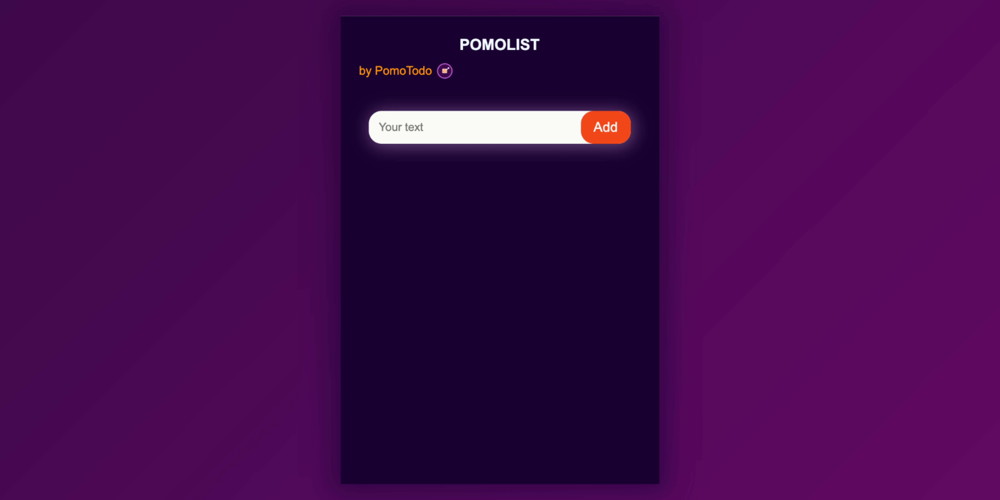

To-do List Chrome Extension with Pomodoro Timer
Easy to use To-Do list Google Chrome extension with pomodoro timer.

What is PomoList Chrome Extension?
PomoList is a Google Chrome extension commonly known as PomoTodo List, that lets you note down your chores within Google Chrome web browser and also it has a Pomodoro Timer you can use for your focus sessions. Manage tasks effortlessly and stay focused with timed work sessions.
How to install a To-Do List
- Go to Chrome Webstore
- Search for PomoTodo List
- Click on Add to Chrome
- Once installed. click on the extension on the top right corner of the browser
- Click on the pin icon to pin the Extension